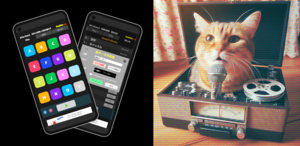
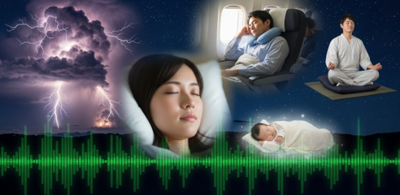
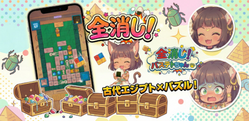
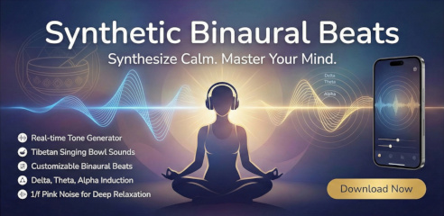
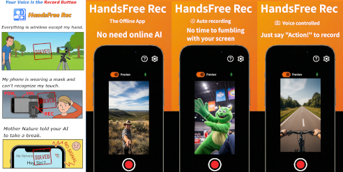

Vostok is The Name of My Solo Development Project
Products
Smartphone Apps
- Customizable Sound Effects Pad - PonPad Rec (Android / iOS)

The simplest app to make your own sound effects pad.
Push buttons and play custom sound effects.
You can make your own sound effects by recording or by loading your chosen audio files from your phone. Attach them to 16 buttons you like.
Let's think various ways to play it.
Features
#Entertainment #Music
- Microphone Recording
- Importing External Audio Files
- Easy Sampler (Editable start point)
- Super Echo (Realtime Delay Effect)
- Voice speed control
- 1/f Fluctuation Noise for Sleep and Tinnitus - NOIZZz (Android / iOS)

NOIZZz The 1/f Fluctuation Noise Generator App
48kHz Real-time noise oscillator generates pure random noises.
Low Pass Filter
Low-pass filter is for relaxation. It can create sounds like indoor wind and rain, road noises, or a spacecrafts cabin.
High Pass Filter
High-pass filters are used to mask tinnitus. They can generate sounds like rain or high frequencies.
Features
#1/f #tinnitus #meditation #relaxation
- Pink noise
- Brown noise
- White noise
- Stop timer
- Dark theme for use in bedroom
- Works completely offline
- Basteto's Fortune (Android / iOS)

An ancient Egypt-themed Tetris-like puzzle game
Aim to clear all blocks and achieve combos!
The gameplay is similar to Tetris in which the player has to direct blocks of stone, mummy and/or treasure to create closures which eliminates the treasure and adds to the player's score.
Also if a full line of stone blocks, treasure blocks or mummy blocks is formed they will disappear in a similar fashion to Tetris and also add to the player's score.
#puzzlegame #cleopatrafortune #tetris
- Synthetic Binaural Beats (Android / iOS)

Featuring a high-fidelity 48kHz real-time tone generator, this app synthesizes pure sine waves to recreate the resonant, meditative sounds of Tibetan singing bowls.
You can freely adjust the pitch within a range of 90Hz to 528Hz. By using headphones, you can experience the powerful effects of binaural beats—fully customizable to support the induction of Delta, Theta, and Alpha brainwaves.
For an even deeper state of calm, mix in 1/f pink noise to enhance the relaxation effect.
Whether as a meditation partner, a sleep aid, or for your daily relaxation, let this app guide your mind to its ideal state.
#meditation #relaxation #sleep #binauralbeats
- HandsFree Rec (Android / iOS)

Voice-Controlled Video Recorder. Offline camera app. Simple, Minimal, Secure
Features:
Voice-Controlled recording.
The Offline App. No AI needed. No security concerns.
Preview-screen off to save battery.
Flexible button layout.
External mic enabled.
Free, No Ads.
HandsFree Rec is designed for creators who need to start and stop video recordings without touching their devices. By using offline advanced voice pattern recognition, it provides a seamless recording experience.
Your minor frustrations with camera apps might be resolved.
This app provides a simple feature for recording videos only, So
Free app, ad-free.
#video #camera #handsfree
I am a japanese indie developer
Hi, I'm Tori Fukasawa.
I only have a high school education. However, I was fortunate enough to
become a computer programmer and I am alive today. All I can say is that if you follow your Desire
for Creation, a path will open up for you. Even if it doesn't make any money.